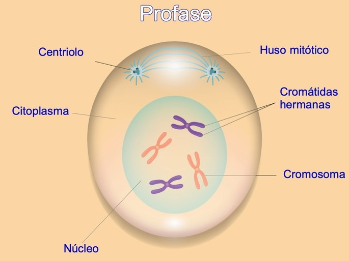
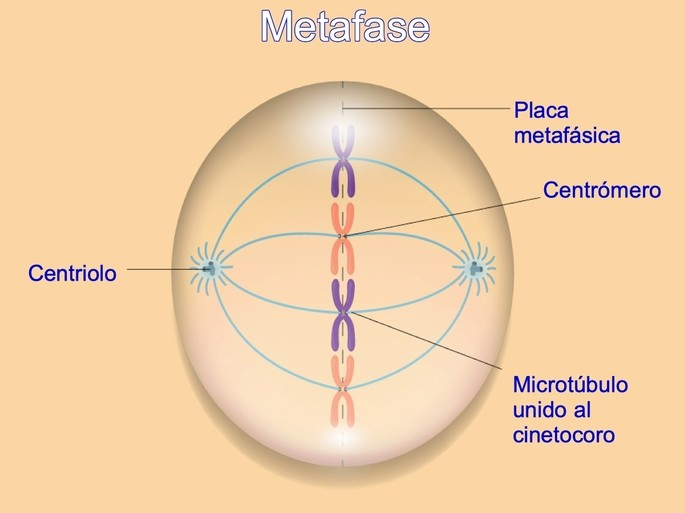
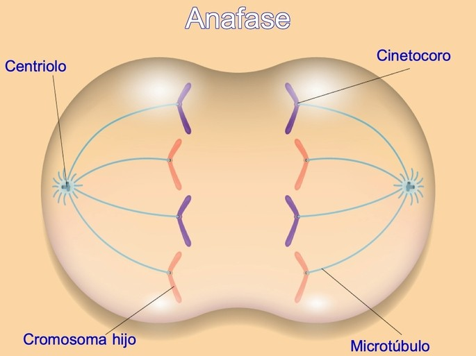
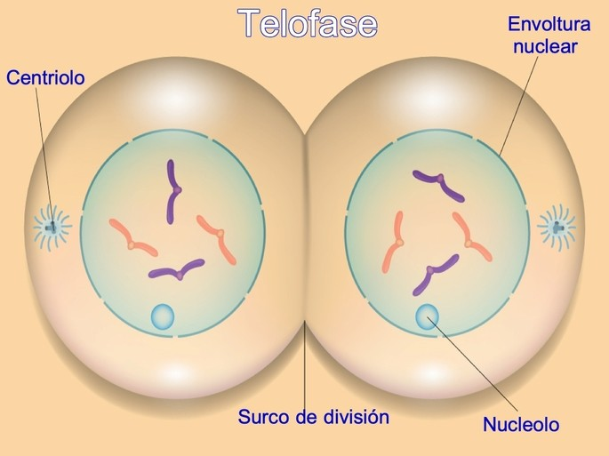
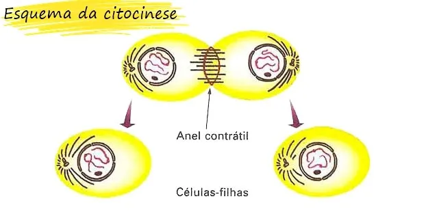
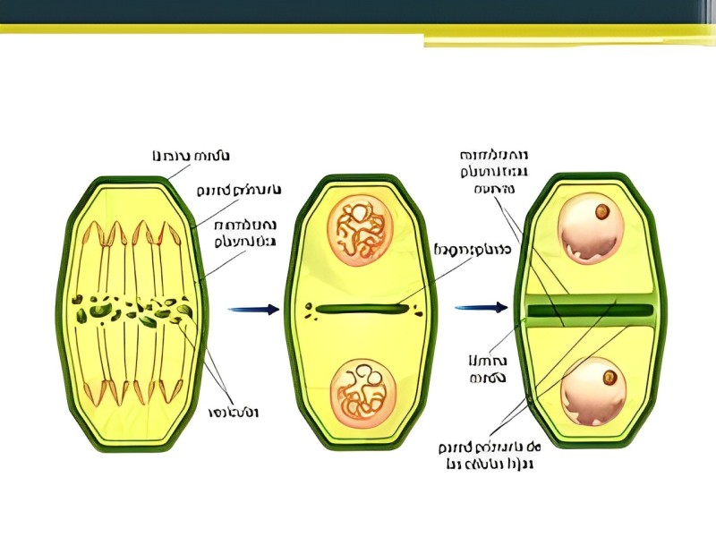

Ciclo Celular
É o conjunto de etapas pelas quais uma célula pode passar desde que se forma até que se divida.
Compreende duas etapas básicas:
Interfase
É um período relativamente longo em que a célula sintetiza diversos constituintes para preparar-se
para uma nova divisão celular.
Esta fase compreende três períodos:
Período G1: Durante este período ocorre grande crescimento celular devido à intensa atividade de biossíntese
e à produção de organelos. As células que não estão preparadas para dividir entram na fase G0,
sendo chamadas de quiescentes e continuando metabolicamente ativas e funcionais.
Período S: Durante este período, dá-se a replicação do DNA.
O número de cromossomas permanece igual, mas a quantidade de DNA na célula duplica e eles passam a ter dois cromatídios.
Período G2: Durante este período são sintetizadas mais proteínas e organelos
em preparação para a divisão celular. Quando este período acaba, inicia-se a mitose.
Fase Mitósica
Compreende a divisão do núcleo, num processo chamado mitose, e a divisão do citoplasma,
num processo chamado citocinese, sendo a parte mais curta do ciclo celular.
Mitose
Dá-se de forma contínua, mas durante este processo distinguem-se quatro fases:
a profase, a metafase, a anafase e a telofase.
Profase
É a etapa mais longa da mitose.
Durante ela os cromossomas iniciam a sua condensação e os centrossomas, que são dois pares de centríolos,
afastam-se para polos opostos, formando entre eles o fuso acromático.
No fim desta fase, o nucléolo desaparece e o invólucro nuclear desintegra-se.
Durante esta fase, não ocorre variação da quantidade de DNA nem do número de cromossomas.

Metafase
Nesta fase, os cromossomas ficam completamente condensados e alinham-se no centro da célula ligados ao fuso acromático,
formando a chamada placa equatorial.
Durante esta fase, não ocorre variação da quantidade de DNA nem do número de cromossomas.

Anafase
Nesta fase, os cromatídios de cada cromossoma separam-se sendo cada um
puxado para um polo pelo fuso acromático em encurtamento.
Durante esta fase, devido à separação dos cromatídios, a quantidade de DNA é reduzida pela metade,
mas o número de cromossomas permanece igual.
No fim desta fase, cada polo da célula possui um conjunto de cromossomas iguais,
sendo cada um destes constituído por apenas um cromatídio.

Telofase
Nesta fase, é iniciada a organização dos nucléolos das células-filha, é formado um invólucro nuclear em volta dos cromossomas
de cada célula-filha, os cromossomas começam a descondensar-se e o fuso acromático é desfeito.
No fim desta fase, a mitose termina, havendo dois núcleos, os quais se reorganizam,
e forma-se um anel proteico ao centro da célula que a começará a estrangular.

Citocinese
É a divisão do citoplasma e inicia-se na anafase ou na telofase.
Nas células animais, forma-se um anel proteico contrátil que estrangula a
célula-mãe até que esta se divida em duas células-filhas.

Nas células vegetais, a citocinese não se dá pelo estrangulamento da célula, pois a parede celular não o permite.
Vesículas do complexo de Golgi são libertadas para a zona equatorial da célula, onde formarão uma nova membrana celular e a
celulose que transportam formará as paredes celulares que vão separar a célula-mãe em duas células-filhas.

Controlo do Ciclo Celular
A integridade do processo de divisão celular é muito importante para a manutenção da vida,
sendo garantida através de vários mecanismos de regulação e controlo do ciclo celular.
Os três principais pontos de controlo do ciclo celular, ou checkpoints,
encontram-se no final da fase G1, no final da fase G2 e a seguir à metafase.
No checkpoint da fase G1, verifica-se se a célula tem tamanho e nutrientes suficiente para se dividir,
se o DNA encontra-se intacto e se existem sinais externos de crescimento das células vizinhas.
Se a verificação for negativa a célula passa para a fase G0, na qual permanece até estar pronta para dividir.
Se a verificação for positiva, a célula passa para a fase S, continuando o ciclo.
No checkpoint da fase G2, verifica-se se há todas as proteínas necessárias à fase mitósica e se o DNA foi replicado corretamente.
Se a verificação for negativa a célula sofre apoptose, que é uma morte celular programada.
Se a verificação for positiva, a célula passa para a fase mitósica, continuando o ciclo.
No checkpoint a seguir à metafase, verifica-se se os cromossomas na placa equatorial estão ligados ao fuso acromático.
Se a verificação for negativa a célula sofre apoptose, que é uma morte celular programada.
Se a verificação for positiva, a célula passa para a citocinese continuando o ciclo.
Falha no Controlo do Ciclo Celular
Falhas nos mecanismos de controlo podem ser resultado de alterações no material genético e podem desencadear a multiplicação
descontrolada das células, resultando num tumor, possivelmente maligno.
Sendo assim, cancros resultam da alteração do ciclo celular normal.